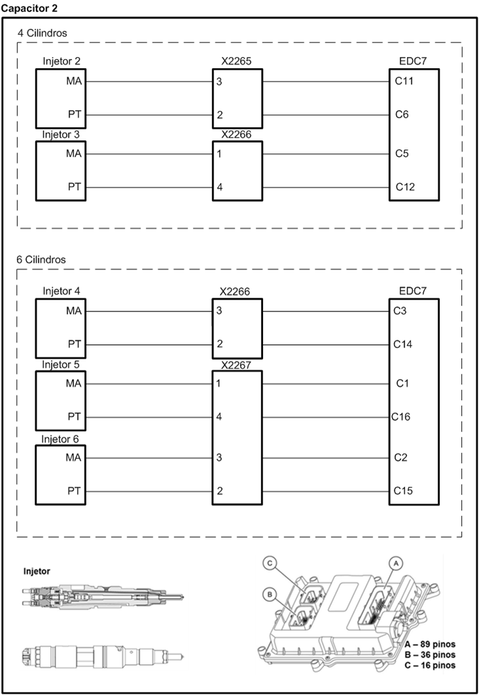
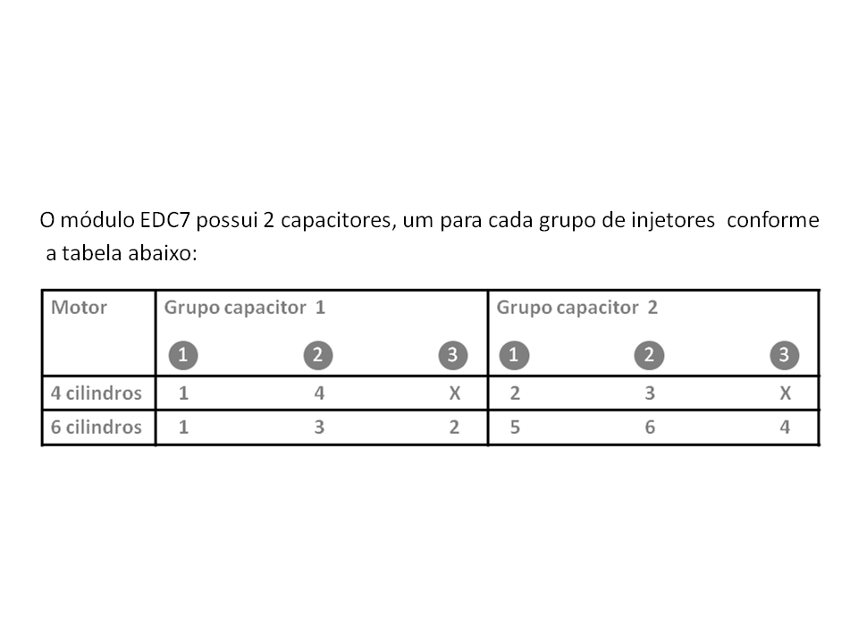

|

Descrição da Falha
Circuito do módulo
de potência, do grupo capacitor 2, sem sinal.
Indicação de Falha
Luz de alerta acende constantemente em vermelho com símbolo  e ativa o alarme sonoro curto, com o veículo andando ou parado.
e ativa o alarme sonoro curto, com o veículo andando ou parado.
A LIM permanece ligada.
Estratégia de Monitoramento
O
módulo EDC7 monitora o módulo de potência do grupo capacitor 2
relativo a limites de tensão, curto circuito e plausibilidade.
Efeito da Falha
O
fornecimento de combustível para o cilindro será interrompido pela
desativação dos injetores do grupo com defeito. Consequentemente
haverá queda de potência do motor. Para veículos 4 cilindros há a
possibilidade de desligar.
Possíveis Falhas
FMI 1: Sinal muito alto.
FMI 2: Sinal muito baixo.
FMI 3: Sinal não plausível.
FMI 4: Sem sinal.
FMI 5: Curto circuito para o massa.
FMI 6: Curto circuito para o
positivo.
Aviso
  Não há
aviso específico para este código. Não há
aviso específico para este código.
Registros de Falhas em Outros
Módulos de Comando
Não.
Considerar os esquemas
elétricos do veículo
| Verificação
|
|
Medição |
Eliminação da
Falha |
|
Injetor, resistência da bobina
|
|
- Medir a resistência
conforme a lista
das etapas de verificação EDC7 C32
Valor nominal:
< 2 Ω
|
–
Substituir o injetor |
| Ativação do injetor |
|
Verificar curso de sinal com o alicate
amperímetro (marcha lenta)
|
– Verificar a
correspondência dos cilindros
– Verificar os cabos
(também sob a tampa de válvulas)
– Verificar as
conexões / uniões roscadas (também sob a tampa de válvulas)
– Caso nenhuma falha
seja verificada, substituir o módulo
EDC7
|
|
Teste de aceleração "Run Up"
|
|
Iniciar a partir do MCO-08 e seguir as
instruções
|
– Na
interrupção das tubulações de um circuito de corrente, somente é
desligado o injetor com defeito, isto é, o "Run Up" é executável e mostra o
circuito de corrente em referência
– Havendo
curto-circuito em um circuito de corrente para um injetor, são
desligados todos os injetores da fileira em questão, isto é, um motor
de 6 cilindros em linha funciona, então, somente com três cilindros. O
"Run Up" é interrompido com uma mensagem de falha, pois o motor somente
funciona com dois cilindros
|

|